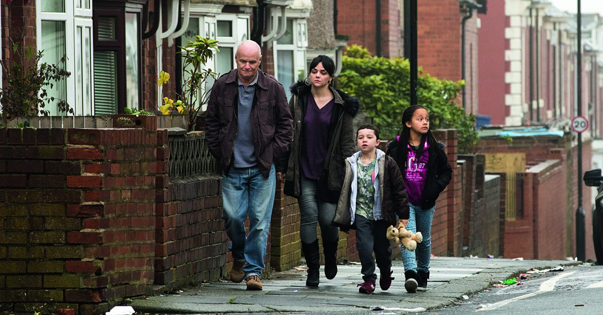

Kristin Linderoth har sett Ken Loach kritikerrosade film Jag, Daniel Blake, och konstaterar att den som varit inställd på att förfasa sig över det råa brittiska klassamhället, för att sedan slå sig för bröstet över våra intakta skyddsnät, åtminstone är femton år för sent ute.

Kan du gå mer än 50 meter, Mr Blake? Rösten i telefonen är monoton. Den 59-årige änklingen och snickaren Daniel försöker avbryta och förklara att han opererats efter en hjärtattack. Att han inte vill något hellre än att börja jobba igen, men att läkaren har ordinerat vila. Att det är därför han söker sjukersättning. Men handläggaren som ska bedöma hans arbetsförmåga låter sig inte avledas från manus. Varje försök från Daniel att säga något annat än »ja« eller »nej«, möts av en tillrättavisning. Klarar du av att hålla i en penna, Mr Blake?
Daniel når inte, trots intyg från sin hjärtläkare, upp till de 15 poäng som krävs för att få sjukersättning. Att överklaga beslutet visar sig vara en byråkratisk mardröm, och under tiden har han inget annat val än att försöka få jobbsökarbidrag. För det krävs att han bevisar att han gör allt för att få arbete. Men hans metoder är lika värdelösa i arbetsförmedlingens ögon som hans långa yrkeserfarenhet. Det som räknas är säljande fraser i ett cv, och att omfamna jobbcoachens glättigt aggressiva mantra om eget ansvar. Att invända att det faktiskt inte finns jobb till alla i arbetslöshetens Newcastle är värre än att svära i kyrkan. Men Daniel, som fostrats i att göra rätt för sig, biter ihop. En av filmens mest rörande scener är när han på biblioteket, en plats där människor utan pengar fortfarande är välkomna, får hjälp att för första gången använda en dator. Men hur han än kämpar är det inte tillräckligt. När han till slut erbjuds ett påhugg med tunga lyft måste han tacka nej för att inte riskera en ny hjärtattack, och då anklagas han för att bara vilja leva på bidrag.
Det gör ont att se någon som skulle kunna vara ens egen pappa sparkas runt av ett samhälle han gett ett helt yrkesliv. Mötet med det trygghetssystem han varit med och finansierat blir som en nyliberal kalldusch. Men så ser Daniel när Katie, en nyinflyttad ensamstående mamma, bestraffas med en »sanction« (indraget jobbsökarbidrag) för sen ankomst till sitt möte med arbetsförmedlaren. Daniel försöker ingripa, men i en värld av sköt-dig-själv uppfattar personalen det som ett hot, och han, Katie och barnen blir utfösta på gatan för att ha »skapat en scen«. Daniel hjälper dem att rusta upp den nergångna lägenhet de anvisats, och successivt blir han en del av familjen.
Tillsammans försöker de ta sig igenom en tillvaro där kropp och psyke prövas både av fattigdomen i sig och av maktlösheten den medför.
När ljuset tänds i biosalongen är stämningen dämpad. Det första jag hör någon säga är »Ja, vi är på god väg dit i Sverige också«. Den som varit inställd på att förfasa sig över det råa brittiska klassamhället, för att sedan slå sig för bröstet över våra intakta skyddsnät, är åtminstone femton år för sent ute. Likheten med den svenska utvecklingen av Arbetsförmedlingen och Försäkringskassan är slående. Retoriken om individens ansvar och att utanförskap bara kan brytas genom lönearbete är i princip identisk.
I Storbritannien, där sjukdomar som en gång utrotats med välfärd har återvänt, och gamla fryser ihjäl för att de inte kan betala elräkningen, har filmen slagit ner som en bomb. Den ansvariga Toryministern sa i parlamentet att han visserligen inte sett den, men ansåg den vara »monstruöst orättvis«. Labourledaren Jeremy Corbyn kontrade med att uppmana honom och premiärministern Theresa May att gå på bio, för att förstå den konservativa politikens konsekvenser. Filmens starkaste scen utspelar sig inne på en riktig food bank, och kön utanför tillhör gatubilden i många städer. Skildringen av myndighetsutövningen bygger på intervjuer med anställda. Och siffrorna talar sitt tydliga språk. 2380 personer dog mellan december 2011 och februari 2014, efter att nyligen ha bedömts friska nog att arbeta.
I en kontext där New Labour, Tories och media under lång tid framställt framför allt kvinnor och migranter i arbetarklassen som snyltare är det logiskt att vilja visa hur snabbt även en vit man utan sociala problem kan tvingas sälja inredningen i en lägenhet där elen stängts av. Och det är inte ovanligt. I januari dog 56-åriga Londonbon Lawrence Bond på gatan utanför arbetsförmedlingen. Maximus, det inhyrda amerikanska bolag som bedömer arbetsförmågan hos de som söker sjukersättning, menade att han var frisk nog att jobba. Inriktningen som beslutades under New Labours sista tid vid makten är nämligen att handläggarna ska titta på »vad du kan göra, och inte på vad du inte kan göra«. Låter det bekant?
Jag, Daniel Blake är en djupt rörande skildring av en självklar klassolidaritet mellan människor med olika hudfärg, kön och ålder. Skådespelarinsatserna är lysande. Berättelsen visar att det inte hjälper att ha rätt, det går inte att vinna mot systemet inom systemet. Det moraliseras inte över att den som är hungrig kan behöva bryta lagar, men man luras inte heller att tro att den enskilda desperata handlingen leder till mer än överlevnad. Vilka alternativ är det då som återstår? Det låter Ken Loach publiken själva komma fram till.
Text: Kristin Linderoth, är medlem av Tidens redaktionskommitté och doktorand i genusvetenskap 3 april, 2017